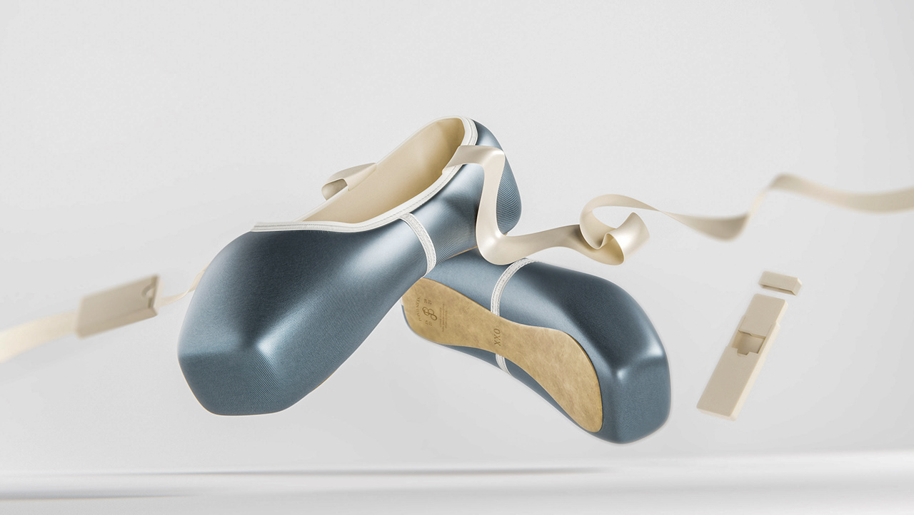

Spitzenschuh 2.0
Projektübersicht
Dies ist die Detailseite für das Projekt "Spitzenschuh 2.0". Dieses Projekt widmet sich der Neuentwicklung des klassischen Spitzenschuhs für Balletttänzerinnen. Ziel war es, Komfort, Haltbarkeit und Leistung durch den Einsatz moderner Materialien und Fertigungstechniken zu verbessern, ohne die Ästhetik und Tradition zu beeinträchtigen.
Es wurden biomechanische Analysen durchgeführt, um die Belastungspunkte zu verstehen und die Struktur des Schuhs entsprechend zu optimieren. Verschiedene Prototypen wurden in Zusammenarbeit mit professionellen Tänzerinnen getestet und iterativ verbessert, um eine optimale Passform und Unterstützung zu gewährleisten.
Hauptmerkmale
- Verbesserte Dämpfung und Unterstützung: Reduzierung der Belastung auf die Füße durch innovative Dämpfungsmaterialien.
- Atmungsaktive und langlebige Materialien: Einsatz von High-Tech-Materialien für längere Haltbarkeit und besseren Komfort.
- Ergonomisches Design für reduzierte Belastung: Optimierte Passform, die Druckpunkte minimiert und die Fußgesundheit fördert.
- Anpassbare Komponenten für individuelle Bedürfnisse: Möglichkeit zur Anpassung von Schaft und Box für eine perfekte Passform.